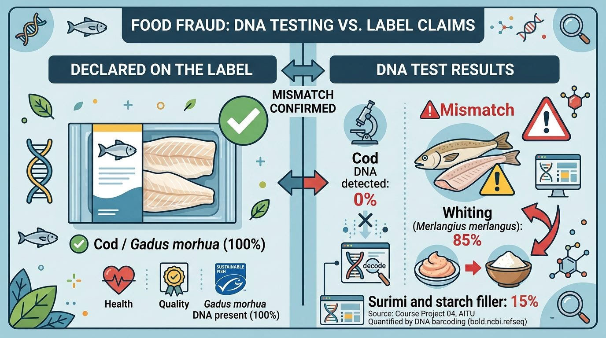

DNA barcoding · 20 seafood products · by Zhan Tabuldinov
Once fish is breaded, minced or pressed into surimi, nobody can tell the species by eye. Its DNA is still there. I read it and compared it with the label.

Every product that promised a species contained it, except one I could not read. Most products promised no species at all.
The interesting part
Surimi is usually made from Alaska pollock. The DNA in these sticks and claws mostly comes from cheaper small pelagic fish: sardinella, mackerel, anchovy. Not illegal, because the label only says “fish”. Not transparent either. And no crab in the crab flavour.
Each bar is the share of reads assigned to each fish. Grey is DNA I could not assign with confidence.
17 Nanopore samples of a single known species. The genus comes out reliably. Telling close species apart is the hard part.
Current thresholds: identity 97%, margin 2 points.
Rows: minimum identity. Columns: minimum margin to the second species.
Outlined cell is the setting I use. Stricter identity lowers the error, but at 99% the pipeline never names a species.
Mixtures of cod, haddock, whiting and wolffish with known content, checked at genus level. Faded rows had too few assigned reads to judge.
Two sequencing platforms, one reference, one set of rules.
COI barcodes from BOLD and mitochondrial genomes from NCBI RefSeq, cut into four markers and cross-checked.
Quality trim with fastp, merge read pairs, denoise into exact sequence variants with vsearch.
Filter by length and quality with chopper, map long reads to all markers with minimap2.
BLAST and mapping hits pass the same three rules. Weak evidence becomes a genus call or “unassigned”.
The reference has gaps. The salmon burger stayed unassigned because salmon 16S is thin in the database. The pipeline answered “unknown”, not a wrong fish.
Short barcodes see the genus. A single mini-barcode often cannot separate close species such as the tunas or the cod family.
Big runs are subsampled. Nanopore runs are capped at 20,000 reads, which can hide small components of a mixture.